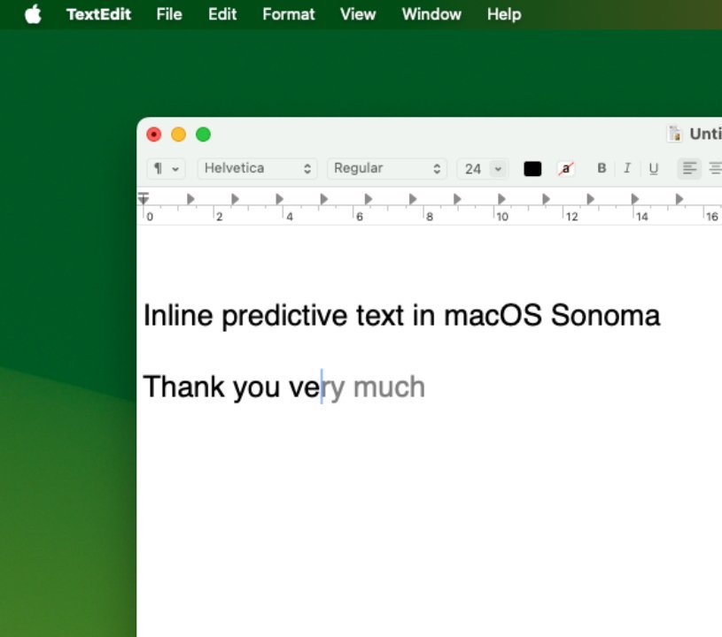

auto-complete (a.k.a. "predictive text") is one of the most common uses of natural language processing. iphones and macs now have inline auto-complete system wide.
it is also one of the best examples of automatic writing in a digital context. as you type, your sentences magically complete themselves.
auto-complete is based on how you type, so it can make predictions accurate to you.
to make my project more... class-relevant, i decided to incorporate the idea of automatic writing as necromancy.
my idea is for auto-complete that lets you channel the dead (or alive).
ideally, the auto-complete would be as the user types. right now, the three "spirits" have one stock message, but i'd love to train a language model on each person's speech
i'd also add a few other options for spirits, instead of just those three. also it could be like a browser extension or a dedicated (more decorated) page